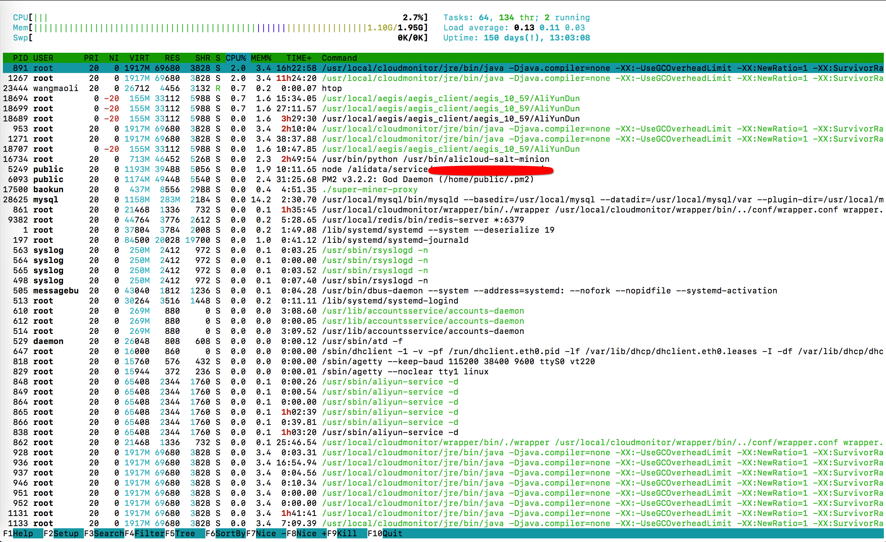

请输入密码以继续访问
大家可能对top监控软件比较熟悉，htop算是top的增强版，相比top其有着很多自身的优势。如下：
两者相比起来，top比较繁琐
默认支持图形界面的鼠标操作
可以横向或纵向滚动浏览进程列表，以便看到所有的进程和完整的命令行
杀进程时不需要输入进程号等Htop的安装，既可以通过源码包编译安装，也可以配置好yum源后网络下载安装
# centos
yum install htop
# ubuntu
apt-get install htop安装完成后，命令行中直接敲击htop命令，即可进入htop的界面

各项从上至下分别说明如下：
左边部分从上至下，分别为，cpu、内存、交换分区的使用情况，右边部分为：Tasks为进程总数，当前运行的进程数、Load average为系统1分钟，5分钟，10分钟的平均负载情况、Uptime为系统运行的时间。
PID：进行的标识号
USER：运行此进程的用户
PRI：进程的优先级
NI：进程的优先级别值，默认的为0，可以进行调整
VIRT：进程占用的虚拟内存值
RES：进程占用的物理内存值
SHR：进程占用的共享内存值
S：进程的运行状况，R表示正在运行、S表示休眠，等待唤醒、Z表示僵死状态
%CPU：该进程占用的CPU使用率
%MEM：该进程占用的物理内存和总内存的百分比
TIME+：该进程启动后占用的总的CPU时间
COMMAND：进程启动的启动命令名称h, ?, F1 查看htop使用说明
S, F2 htop 设定
/, F3 搜索进程
\, F4 增量进程过滤器
t, F5 显示树形结构
, F6 选择排序方式
[, F7 可减少nice值可以提高对应进程的优先级
], F8 可增加nice值，降低对应进程的优先级
k, F9 可对进程传递信号
q, F10 结束htop
u 只显示一个给定的用户的过程
U 取消标记所有的进程
H 显示或隐藏用户线程
K 显示或隐藏内核线程
F 跟踪进程
P 按CPU 使用排序
M 按内存使用排序
T 按Time+ 使用排序
l 显示进程打开的文件
I 倒转排序顺序
s 选择某进程，按s:用strace追踪进程的系统调用
F2 Htop设定, 鼠标点击Setup或者按下F2 之后进入htop 设定的页面，